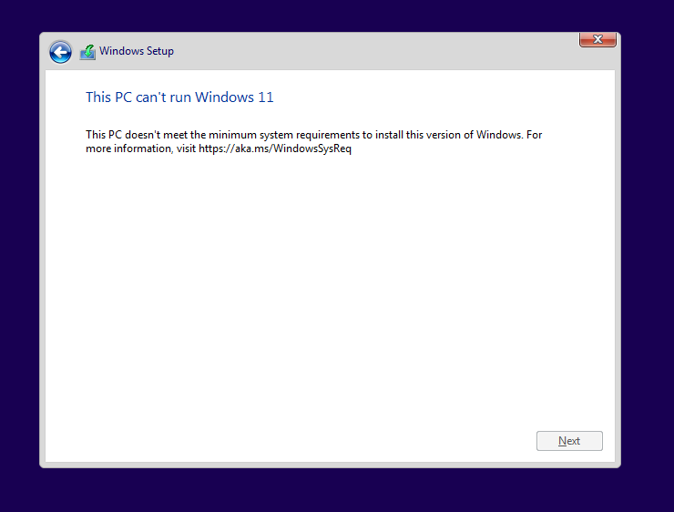
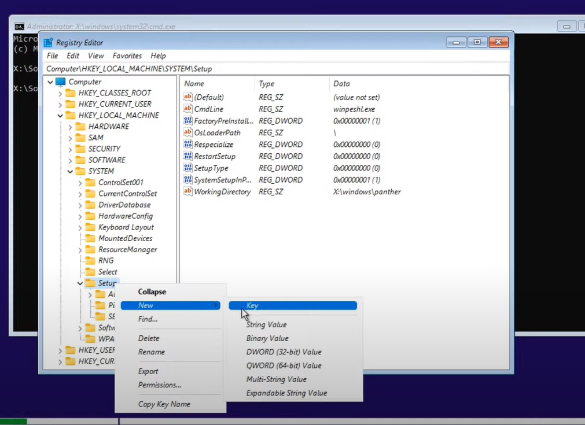

Fixing “Cannot Install Windows 11” error during installation
Problem
Today I tried to install Windows 11 on my virtual platform and during installation faced with the following problem: 
Solution
In this screen type Shift + F10 at the same time to open a command promt. Then in command line type regedit:

In the opened Registry Editor window, go to HKEY_LOCAL_MACHINE -> SYSTEM -> Setup.

Right click on Setup and then create a New -> Key. Give some name to created key. I named it “MyConfig”. !!!! Give “LabConfig” name. !!!

Click right button on the blank space of the window and choose: New -> DWORD (32-bit) Value.

Rename created value to BypassTPMCheck. Thenk double-click on the on the created object and change Value date to 1.
Create more DWORDS values and give them following names: BypassCPUCheck, BypassRAMCheck and BypassSecureBootCheck. The value data of all created objects should be 1.
Close all opened windows.
And click on “Install now” button.
That’s it.